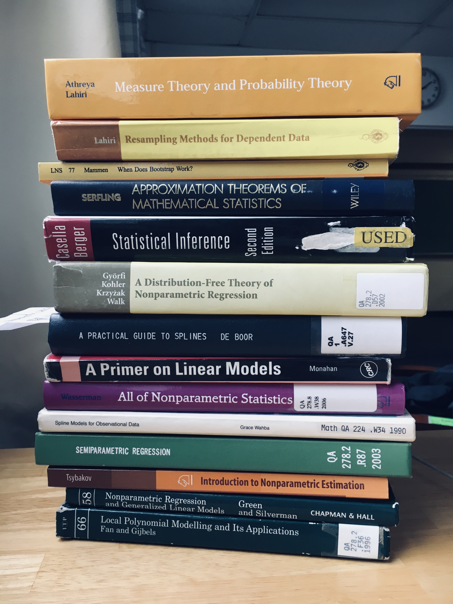

1:15 - 2:30 pm, Tuesday and Thursday, LeConte College 205
Course syllabus
Slides
Annotated slides
Code from class
Topics
Supplements
Lec_00_slides.pdf
Course overview
Lec_01_slides.pdf
Lec_01_slides_annotated.pdf
R code
CDF estimation
Lec_02_slides.pdf
Lec_02_slides_annotated.pdf
R code
kernel density estimation
Lec_03_slides.pdf
Lec_03_slides_annotated.pdf
multivariate kernel density estimation
Lec_04_slides.pdf
Lec_04_slides_partially_annotated.pdf
Nadaraya-Watson and local polynomial estimators
LaTex/R Markdown templates:
template.tex
template.Rmd
LaTex_symbols
Homework
Topics
Due
Solutions
hw_01.pdf
Hoeffding's inequality, KS test, Brownian bridge, kernel density estimation, Hölder smoothness, higher order kernels, CV for KDE bandwidth selection
Tuesday, Feb 4th
hw_01_sol.pdf
hw_02.pdf
Multivariate KDE, far-between-ness of points in high-dimensional space, N-W and local polynomial estimators, CV for bandwidth selection
Thursday, Feb 18th
The project:
Project description.pdf
Project component
Template
Deadline
Choose topic
Before class Tues, Feb 4th.
Literature review
lit_review_template.tex
lit_review_template.bib
Thursday, March 6th by midnight via Blackboard.
Proposal presentation (10 min)
presentation_template.tex
presentation_template.bib
In class on Thursday, March 27th.
Final presentation (20 min)
Last two days of class, April the 22nd and 24th.
Written report
written_report_template.tex
written_report_template.bib
Tuesday, April 29th by midnight via Blackboard.
A few of the books I am using to prep for the course:

Back to Karl Gregory's homepage